Getting Meshy & Lamp

I found a mesh of a snail and a mushroom lamp that I wanted to combine together. The process was rather simple, in that I made sure that they were touching in Rhino, and then combined them together via BooleanUnion function to create a closed polysurface. Converting to stl did not prompt any errors within rapid prototyping.

Documentation for Mesh:
Rhino file
STL file
Creating a Lamp

I originally had an idea of converting one of the musical pieces that I'm fond of into data that could be printed out. After all, an octave consists of 12 notes, of which can be then translated into numbers that indicate some sort of graph. I had recently been playing Nikolai Kapustin's Etude, one movement of which (Pastorale) that I enjoy.
Framing my data around certain passages of this song, I converted the notes into normalized set of numbers that could then be graphed in a 2d axis. I then thought about applying even more transofmration along the z-axis and rotating the notes around it, to create a spiral-like effect that the piece conveys
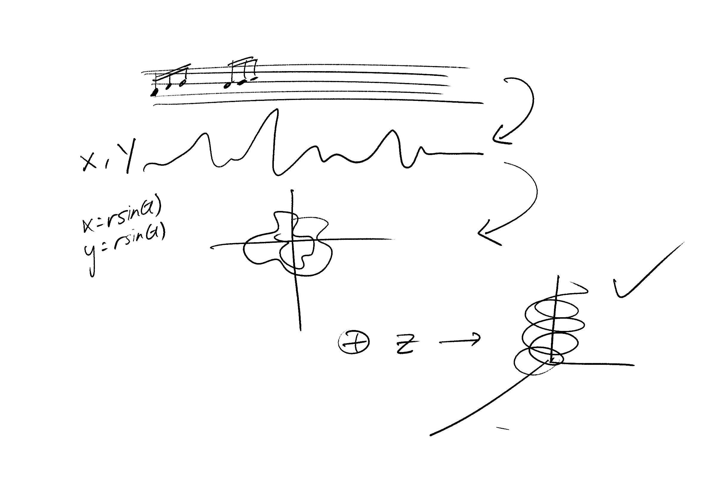
This took some thinking around calculations, but they were pretty simple to do. Using the parametric equation for an ellipse (x(t) = radius*cos(t) and y(t) = raduis*sin(t)), I converted the note information in a spreadsheet to provide appropriate coordinate points for my notes.
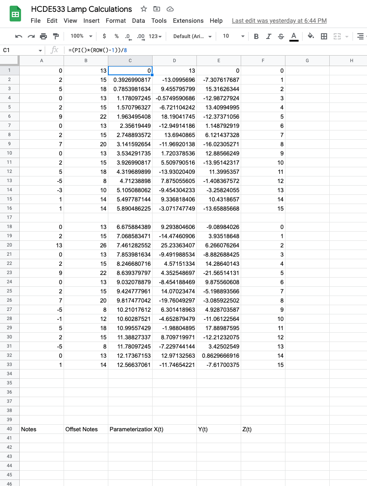I began converting these set of points into spirals using grasshopper in Rhino. This was pretty simple to do - there were components that could allow me to map out these points into a point cloud, which I then drew a polyline through, with certain degrees of freedom
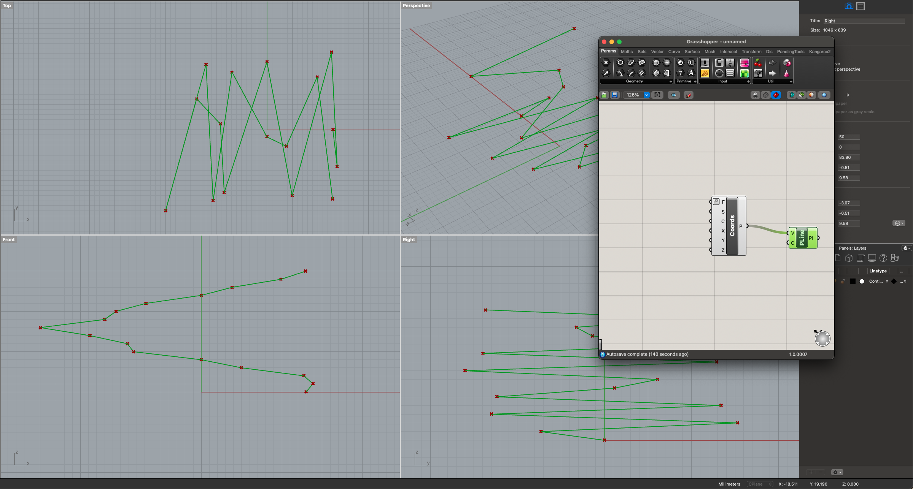 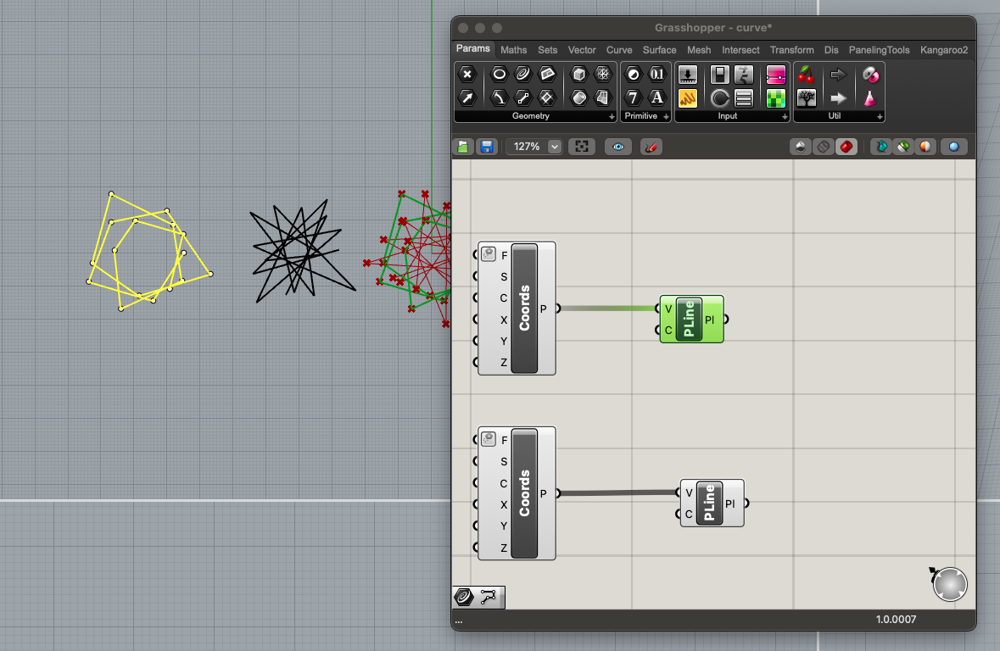 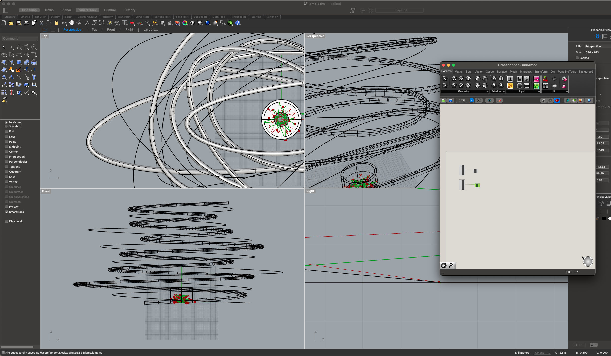Eventually, I created a spiral that could work out for me, but then I wanted to create an appropriate lamp holder based on measurements of my lamp innerds. Taking measurement of the width and the length of the innerd itself, I landed on a solution to create an innerd that could be attached via a vertical slot in which the wires could go into.
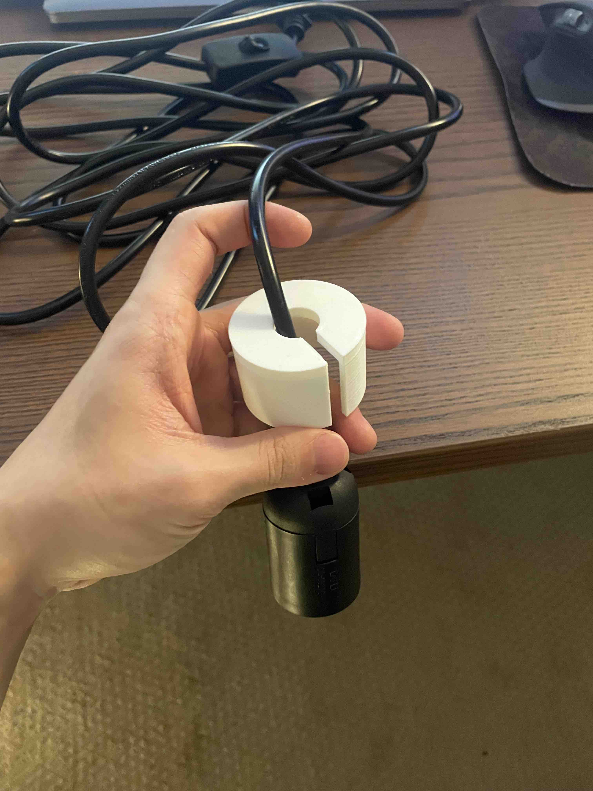 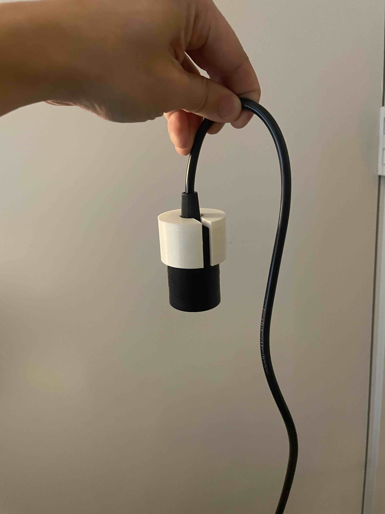Now, it was the matter of attaching this piece to rest of my lamp shape. Before I moved on, I tried to test ONE of my spirals in Cura to see how long it would take.
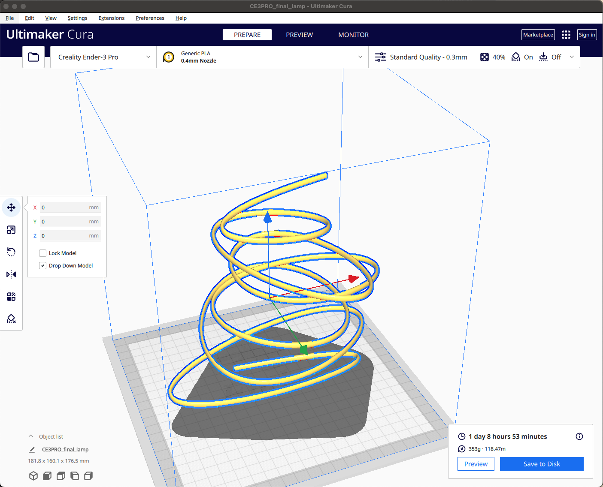Uhh... okay. 1 day, 8 hours to print just one of them... I thought about pivoting my lamp direction at this point, but I also decided to get started on printing just to see how the spiral would turn out. It was actually a big fail, because the spirals did not have enough support to support itself while printing. I had to think of another direction for my lamp.
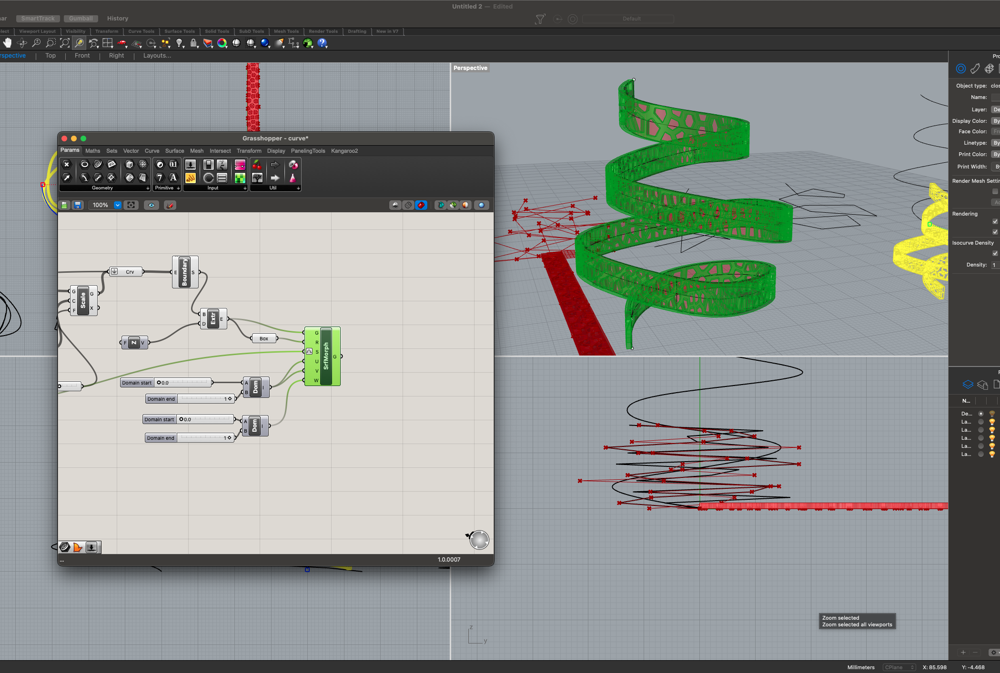One of the options was to make the spiral pipe bigger so that the print would be more stable. I wanted to make this a bit more interesting by introducing voronoi holes, which my classmates have been posting about in discord. I followed a video on using grasshopper to apply voronoi holes into surfaces (in appendix). In the end though, the print still failed and took a very long time.
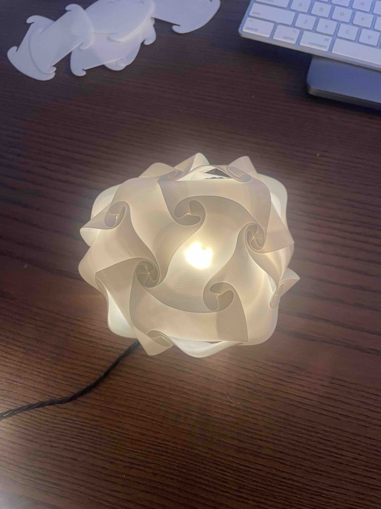At this point, I had a small breakdown and just wanted to do something simple to take a break from all this Rhino and Cura and 3d printing headache. I found an stl file of a puzzle lamp online (https://www.thingiverse.com/thing:75582) to print out and feel at least some sort of accomplishment in this fiasco of my assignment.

After thinking about it for sometime, I arrived on this solution of cutting half of the spiral and doing a half-way rotation of my notes around the z-axis at z=0. I would just draw a simple shape and extrude that to make the print easier.
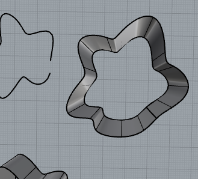 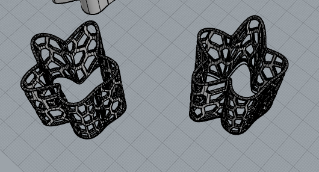In the end, this was not what I wanted to do, but I just wanted to make sure I have something to show by Tuesday.
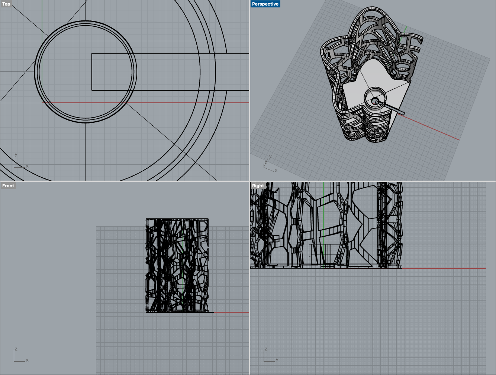 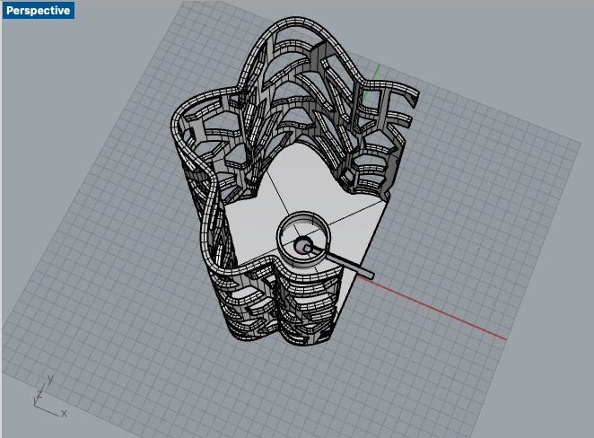This is what it looked like after I combined the extrusion with my previous design of the lamp innerd holder. The lamp innerd + wire would be inserted through the slot made in the designs, and the cylinder cup will hold the innerd in place.
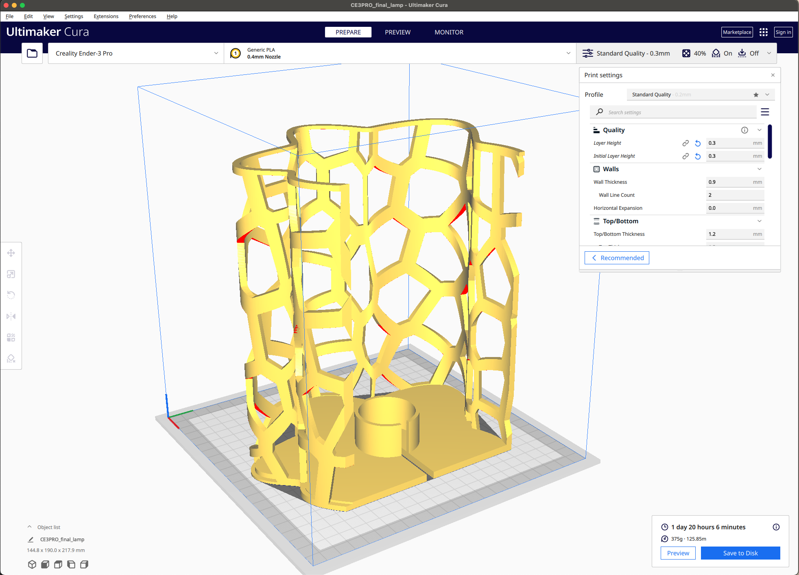I'm still working on the print for the lamp, but I'm hoping I can have the final designs of the lamp soon. As of Tuesday November 15th, the lamp is still being printed.
Documentation for Lamp:
Final Rhino file
Final Lamp Holder Rhino file
STL Final Lamp